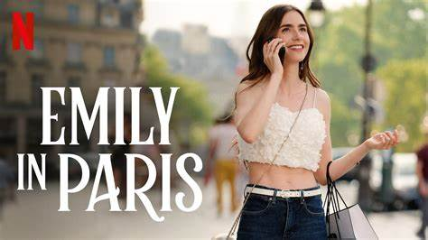
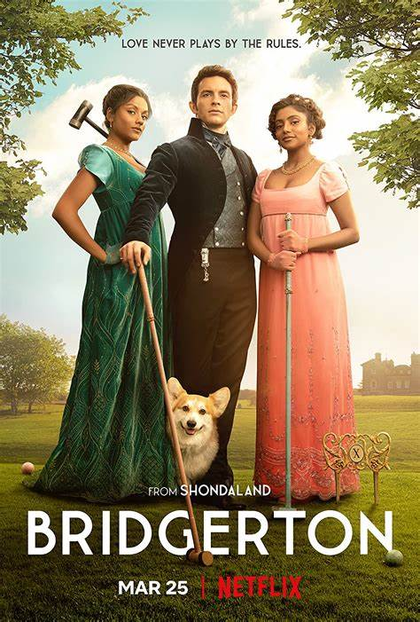

Emily is an American romantic comedy-drama television series created by Darren star for netflix.
The three sisters discover that they are descendants of a line of female witches
and they are destined to fight against the forces of evil,
using their combined power of withcraft.
Power Rangers is an entertainment and merchandising franchise built around a live-action superhero television series.

Bridgerton is an American historical fiction-romance streaming television series created by Chris Van Dusen for netflix.
 Brothers Dean and sam follow in their father's footsteps and set out eliminate monsters,
and other supernatural entities that exist on earth.